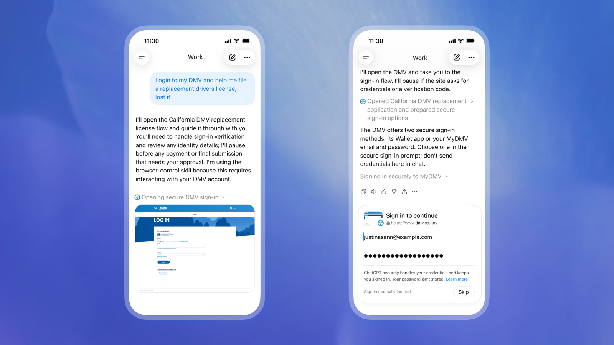
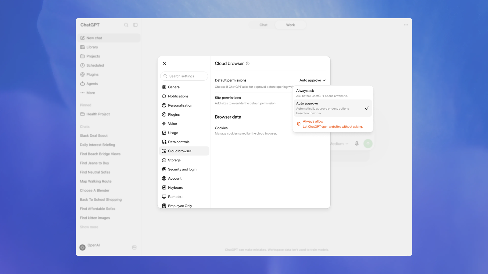
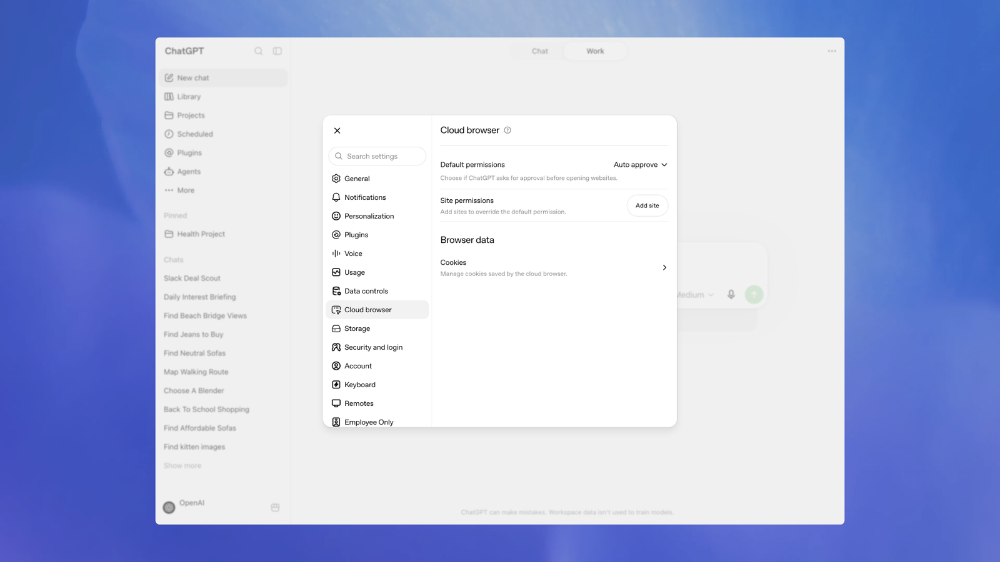

Browser isn’t available in Codex CLI or the Codex IDE extension. Open the ChatGPT desktop app to use the built-in browser.
Browser lets ChatGPT open websites, gather current information, and take action while you stay in control. Use it to compare options, complete a multi-step task on a website, or review a page you’re building.
Browser is available in ChatGPT on the web and in the ChatGPT desktop app.
GPT-6 Astra improves visual judgment for tasks such as checking a page against a screenshot or completing a workflow across sites. Choose it when available in your model selector, and describe how to verify the finished result.
For managed desktop environments, administrators can restrict browser origins, uploads, downloads, and developer access. See managed browser controls.
Treat page content as untrusted context. Review the site and proposed action before sharing sensitive information or allowing ChatGPT to act.
The built-in browser in the ChatGPT desktop app gives you and ChatGPT a shared view of websites and local web apps inside a chat. Use it to preview a page, leave visual feedback, or let ChatGPT interact with a site on your behalf.
The built-in browser uses a browser profile that is separate from your regular browser. It doesn’t automatically share your existing tabs or browser session. You can sign in directly when a task requires an account. Open Settings > Browser to manage browser data and any profile-import features available on your device.
Browser downloads go to your system Downloads folder by default. In Settings > Browser, you can choose another download location, reset it to the system default, or turn on Ask where to save downloads.
Use the browser extension instead when ChatGPT needs to work in an existing Chrome, Edge, Brave, Opera, or Vivaldi tab or use your regular browser profile.
Open the built-in browser from the toolbar, by clicking a URL, by navigating manually, or by pressing Cmd+Shift+B (Ctrl+Shift+B on Windows).
Search from the address bar
Start typing in the built-in browser’s address bar to find pages from its browsing history. Select a matching page to reopen it, or enter a search term to search Google when no history result matches.
The built-in browser keeps its own profile and browsing history. Results don’t automatically include pages from your regular Chrome profile or other browsers.
Manage browsing history
Open Settings > Browser to search the built-in browser’s history, reopen a visited page, or remove history entries when your organization permits it. Use Clear browsing data to choose a time range and the types of browsing data you want to remove.
When available, ChatGPT can ask to search your browsing history to find a page that matters to the current task. Review the request before allowing access. Browsing history can include internal URLs, search terms, and other sensitive information, so allow it only when the task requires that context.
Computer Use in the browser
In the desktop app, Computer Use lets ChatGPT Work or Codex operate the built-in browser directly. The selected experience can open pages, click, type, inspect rendered state, take screenshots, and verify the result of its work in the page.
Browser is included with the desktop app and installs automatically. Ask ChatGPT
or Codex to use the built-in browser in your task, or reference it directly with
@Browser.
For example:
Use the browser to open http://localhost:3000/settings, reproduce the layout
bug, and fix only the overflowing controls.ChatGPT asks before it uses a website unless you have already allowed that site. Manage allowed and blocked sites in Settings > Browser. ChatGPT also asks for confirmation before sensitive actions such as submitting information, making a purchase, changing permissions, or deleting data. ChatGPT can’t automate file uploads in the built-in browser.
Instructions on a page can be misleading or malicious. A website permission lets ChatGPT interact with that site; it doesn’t make the site’s content trustworthy or approve every action.
Preview a page
- Start your app’s development server in the integrated terminal or with a local environment action.
- Open the local route, file-backed page, or public page by clicking a URL or navigating manually in the browser.
- Review the rendered state alongside the code diff.
- Leave browser comments on the elements or areas that need changes.
- Ask ChatGPT to address the comments and keep the scope narrow.
For example:
I left comments on the pricing page in the built-in browser. Address the mobile
layout issues and keep the card structure unchanged.Comment on the page
When a bug is visible only in the rendered page, use browser comments to give ChatGPT precise feedback.
- Turn on Annotation mode.
- Click an element, or drag to select an area.
- Write and save your comment.
- Send a message in the chat asking ChatGPT to address the comments.
Comments work best when you name the problem and the result you want:
This button overflows on mobile. Keep the label on one line if it fits,
otherwise wrap it without changing the card height.This tooltip covers the data point under the cursor. Reposition the tooltip so
it stays inside the chart bounds.Styling feedback
When you add an annotation to a section on the page, select Adjust next to the text input to give ChatGPT more granular style feedback. You can change values such as font, text, spacing, and color, preview the result on the page, and then send the annotation with a clearer target.
Keep browser tasks scoped
Keep each browser task small enough to review in one pass.
- Name the page, route, or URL.
- Name the state you care about, such as loading, empty, error, or success.
- Leave comments on the exact elements or areas that need changes.
- Review the page again after ChatGPT finishes.
- Ask ChatGPT to start or check the development server before it opens a local page.
For repository changes, use the review pane to inspect the changes and leave comments.
Developer mode
Developer mode works with Computer Use in Chrome and the built-in browser. It gives ChatGPT controlled access to the Chrome DevTools Protocol (CDP). Use it to profile JavaScript, inspect console output and network traffic, examine the DOM and applied styles, or diagnose an issue in the live browser.
To enable it, open Settings > Browser and,
under Developer mode, turn on Enable full CDP access. If your
organization has disabled this setting, you can’t enable it locally. Admins can
set browser_use_full_cdp_access = false under [features] in
requirements.toml
to disable full CDP access and prevent users from enabling the corresponding
setting in the ChatGPT desktop app.
Full CDP access can expose sensitive browser internals. ChatGPT asks for explicit approval before it uses full CDP to inspect a website. Review the site, task, and requested access before approving it.
Use @Browser for the built-in browser. To use Developer mode in Chrome,
set up the Chrome extension and invoke @Chrome.
For example:
This app is slow. Use @Browser to capture a performance trace and inspect
network traffic, then identify the bottleneck.Use ChatGPT Work to get things done across the web
ChatGPT Work can complete tasks across websites, including sites where you need to sign in.
Work uses its own browser, running on a separate computer in the cloud, not the browser on your phone or laptop.
Start a task from ChatGPT Work on web or mobile, and ChatGPT can continue working even if you step away and close your computer. Using its computer, Work can accomplish a wide variety of tasks on the internet by reading, clicking, and typing into web pages. Depending on your request, it may use a plugin, its browser, or both.
For example, ChatGPT can help you:
- Find and book a DMV appointment.
- Sign in to your utility account and compare plans.
- Find and save apartments that match your criteria.
- Research competitors on social media.
- Close the books in your accounting software.
You control which websites ChatGPT can access, and it is trained to ask for confirmation before consequential actions, such as completing a booking or payment. If ChatGPT is ever blocked for any reason, you can take over its computer and use it yourself on mobile and desktop.
The ability for ChatGPT Work to navigate to websites that need authentication is available on web and mobile on Plus and Pro plans.
Availability depends on rollout. Website sign-in isn’t available for Enterprise or Edu workspaces.
How ChatGPT Work’s computer works
When your task requires a website, ChatGPT uses its own browser to navigate pages, gather information, and complete steps online.
By default, ChatGPT asks before accessing a new website. You can choose to approve requests individually or adjust your settings to let ChatGPT automatically approve websites relevant to your task. ChatGPT Work will always ask for confirmation before consequential actions, such as submitting your information to book an appointment or completing a payment.
Sign in to a website
If a website requires you to sign in, ChatGPT Work will ask you to sign in. After you authenticate, it will continue working on the signed-in website. Your session will remain active for future tasks, so you do not need to sign in every time.
Use the secure sign-in form
ChatGPT cannot see your username or password, and they are never seen by the model or used in model training. ChatGPT does not store your username or passwords. You can delete your browsing history from all sites or one site individually at any time from Settings > Cloud browser > Browser data, which will log you out from that site.
When ChatGPT encounters a login screen, it pauses and asks you to enter your credentials and two-factor authentication codes as needed. On iOS, you can use a supported password manager to sign in seamlessly.
Use the sign-in form provided by ChatGPT. Don’t send passwords in the chat.

Sign in on the web page
If offered, select Sign in on web page instead to sign in directly in the cloud browser. The task pauses while you sign in. Select I’m done to return control to ChatGPT, or skip or cancel the request.
How to get started with a task in ChatGPT Work
- Open ChatGPT on web or mobile and start a task in Work.
- Describe what you want ChatGPT to do.
- Approve website access if prompted.
- Sign in directly if a website requires it.
- Follow the task’s progress in the conversation.
- Review the result and approve any consequential actions.
You don’t need to select the browser separately. ChatGPT decides when to use it based on your request.
Some websites block access. If that happens, ChatGPT will let you know and, when possible, try another way to complete the task.
Security and user controls
In ChatGPT settings, open Cloud browser to manage website permissions. Available options include:
- Always ask: Review every website access request manually.
- Auto approve: Let ChatGPT automatically approve access after it checks for the relevancy of the website to your task.
- Always allow: Allow website access without that additional review step. We offer this option for minimal friction, but do not recommend this option.

You can also allow or block individual websites to override your default permissions.
Before ChatGPT asks you to sign in to any website, an additional review model checks the sign-in request and where your information will be entered for signs of phishing or deception. We test the agent against risks including prompt injection, phishing, and unintended actions.
For full transparency, you’ll see the website’s address and a preview of its sign-in form, and you can inspect the live website before continuing. Credentials entered through the secure sign-in form go directly to the browser and are not visible to the model.
Privacy and browser data
ChatGPT Work’s computer runs separately from the browser on your device. It maintains its own cookies, browser data, and signed-in sessions. Information ChatGPT uses while completing a task follows the ChatGPT data-control settings you choose. You can review these in ChatGPT web and mobile under Settings > Data controls.
It doesn’t use your personal browser’s open tabs, browsing history, saved passwords, cookies, extensions, or existing signed-in sessions.
To clear browser data, go to Settings > Cloud browser > Browser data > Clear all. This signs you out of websites in ChatGPT Work’s browser, so you’ll need to sign in again for future tasks.

Limitations
- Website sign-in isn’t available in every workspace or rollout. If a task requires a sign-in method that isn’t supported, complete that step yourself or use another available tool.
- Some sites block automated browsers or require a CAPTCHA. ChatGPT may not be able to complete a task on those sites.
- Availability of cloud browsing can depend on your plan, workspace settings, and rollout. Cloud browsing is available in all regions on paid plans other than Free and Go. Enterprise admins must enable cloud browsing for their workspace.
During rollout, the browser might not appear immediately even when your plan supports it.